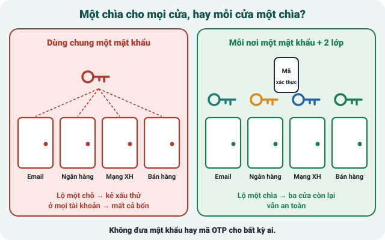

K10 · Năng lực số, AI và quy tắc nơi làm việc › Bậc 1 Làm quen
Giữ mật khẩu và thông tin cá nhân khi bắt đầu đi làm
1. Mục tiêu
- Tạo mật khẩu dài, khác nhau cho từng tài khoản, và bật xác thực hai lớp.
- Nói 3 loại thông tin cá nhân không nên đăng hay gửi người lạ, và vì sao.
2. Khởi động truy xuất
- Ba vai nhỏ trong nhóm là gì?
- Bốn bước chỉ bạn mới một việc là gì?
Đáp án
- Người giữ giờ, người ghi chép, người nhắc việc.
- Nói mục đích; làm mẫu, nói từng bước; bạn làm thử; khen một điểm, sửa một điểm.
Xem lại: Nhận một vai nhỏ trong nhóm.
3. Giải thích
Nghề nào bây giờ cũng dùng công nghệ. Thu ngân dùng máy tính tiền. Thợ may dùng máy may có cài chương trình. Shipper dùng ứng dụng nhận đơn. Khi đi làm, bạn sẽ có thêm tài khoản: email công việc, nhóm chat, phần mềm bán hàng.
Mỗi tài khoản là một cánh cửa. Mất tài khoản thì kẻ xấu có thể giả danh bạn, lấy dữ liệu của khách hoặc của chỗ làm.
Ba thói quen giữ tài khoản:
Ba thói quen giữ tài khoản
- Mật khẩu dài, mỗi nơi một mật khẩuDùng một cụm từ dài mà chỉ bạn nhớ, thay vì một từ ngắn.
- Bật xác thực hai lớpĐăng nhập cần thêm mã gửi về điện thoại hoặc ứng dụng xác thực.
- Không đưa mật khẩu, mã OTP cho aiKể cả người tự xưng là quản lý, ngân hàng hay công an.
Vì sao mỗi nơi một mật khẩu? Nếu một trang bị lộ dữ liệu, kẻ xấu sẽ thử mật khẩu đó ở các tài khoản khác. Dùng chung một mật khẩu là mất cùng lúc nhiều tài khoản.

Mã OTP (mã dùng một lần) là chìa khóa cuối cùng. Ai hỏi mã này, gần như chắc chắn là lừa đảo.
Ba loại thông tin cá nhân nên giữ kín:
- Ảnh căn cước, số căn cước. Có thể bị dùng để mở tài khoản, vay tiền đứng tên bạn.
- Mật khẩu, mã OTP, ảnh thẻ ngân hàng. Có thể bị dùng để rút tiền.
- Địa chỉ nhà, lịch đi lại hằng ngày. Người lạ có thể biết bạn ở đâu, lúc nào vắng nhà.
Khi xin việc, chỉ gửi giấy tờ cho nơi tuyển dụng bạn đã kiểm tra. Nơi tuyển đòi ảnh căn cước kèm tiền cọc qua tin nhắn là dấu hiệu đáng ngờ.
4. Ví dụ tại nơi làm việc Việt Nam
Tình huống giả định. Trang vừa nhận làm thêm ở một cửa hàng mỹ phẩm. Trang được cấp tài khoản phần mềm bán hàng.
Trang làm như sau:
- Đổi mật khẩu được cấp sẵn sang một cụm từ dài, không dùng lại mật khẩu Facebook.
- Bật xác thực hai lớp cho email cá nhân và tài khoản ngân hàng.
- Không dán mật khẩu lên màn hình quầy. Khi hết ca, Trang đăng xuất.
Một tuần sau, có tin nhắn tự xưng là "kỹ thuật phần mềm" xin mã OTP để "bảo trì". Trang không gửi và báo ngay chị quản lý.
Vì sao cách này tốt: Trang bảo vệ cả tài khoản chỗ làm lẫn tài khoản cá nhân. Trang nhận ra yêu cầu xin OTP và báo đúng người.
5. Thực hành
Tình huống giả định. Bạn mới vào làm ở một quán cà phê. Anh quản lý gửi mật khẩu máy tính tiền vào nhóm chat chung có cả khách quen. Một bạn đồng nghiệp đề nghị: "Dùng mật khẩu 123456 cho dễ nhớ."
Viết 2 việc bạn sẽ đề xuất với anh quản lý.
Gợi ý 1
Có hai vấn đề: nơi gửi mật khẩu và độ mạnh của mật khẩu.
Lời giải mẫu
- "Anh ơi, nhóm chat có cả khách. Mình gửi mật khẩu riêng cho từng người được không ạ?"
- "Em đề xuất đổi sang mật khẩu dài hơn, vì 123456 rất dễ bị đoán."
6. Tự kiểm tra
Chọn đáp án. Mỗi lựa chọn đều có giải thích.
Câu 1. Vì sao không nên dùng chung một mật khẩu cho nhiều tài khoản?
-
Chưa đúng. Dùng chung thật ra dễ nhớ hơn. Vấn đề nằm ở rủi ro.
-
Đúng. Đúng. Dùng chung mật khẩu có thể mất nhiều tài khoản cùng lúc.
-
Chưa đúng. Lý do ở đây là an toàn, không phải vì một điều luật cụ thể.
Câu 2. Một người gọi điện, tự xưng là nhân viên ngân hàng, xin mã OTP để "mở khóa tài khoản". Bạn làm gì?
-
Chưa đúng. Kẻ lừa đảo có thể biết tên bạn. Không ai có lý do chính đáng để xin mã OTP.
-
Đúng. Đúng. Không đưa OTP cho ai, và tự liên hệ ngân hàng qua kênh chính thức.
-
Chưa đúng. Có mã OTP, kẻ xấu có thể chuyển tiền ngay lập tức.
Câu 3. Nơi tuyển dụng qua mạng đòi ảnh căn cước hai mặt và 500.000 đồng tiền cọc đồng phục. Bạn nghĩ gì?
-
Chưa đúng. Đòi giấy tờ kèm tiền cọc qua tin nhắn là dấu hiệu đáng ngờ.
-
Đúng. Đúng. Chỉ gửi giấy tờ cho nơi tuyển dụng bạn đã kiểm tra.
-
Chưa đúng. Ảnh căn cước cũng có thể bị dùng để mở tài khoản đứng tên bạn.
Câu 4. Hết ca ở quầy, bạn nên làm gì với tài khoản phần mềm bán hàng?
-
Chưa đúng. Người ca sau sẽ làm việc dưới tên bạn. Có sai sót thì khó biết ai làm.
-
Đúng. Đúng. Đăng xuất giúp mỗi người chỉ làm việc bằng tài khoản của mình.
-
Chưa đúng. Mật khẩu dán công khai thì ai cũng dùng được tài khoản của bạn.
7. Phản tư
- Bạn đang dùng chung một mật khẩu cho bao nhiêu tài khoản?
- Bạn đã từng đăng thông tin nào lên mạng mà giờ muốn xóa?
8. Áp dụng thật
Trong 7 ngày tới, đổi mật khẩu cho 3 tài khoản quan trọng nhất: email, ngân hàng, mạng xã hội. Mỗi tài khoản một mật khẩu riêng. Bật xác thực hai lớp cho ít nhất một tài khoản.
9. Siêu dữ liệu
| skill | K10 · Năng lực số, AI và quy tắc nơi làm việc |
|---|---|
| level | Bậc 1 · Làm quen |
| group | N2 |
| framework_map | WEF: Technological literacy; CSfW: 3e Work in a digital world; SkillsFuture CCS: Digital Fluency; DigComp 3.0 (chỉ dẫn chiếu) |
| updated | 2026-11-14 |
Hoàn thành bài
Đánh dấu đã học để site gợi ý lịch ôn sau 1, 3 và 7 ngày. Dữ liệu chỉ lưu trên máy của bạn.
Lịch ôn gợi ý: